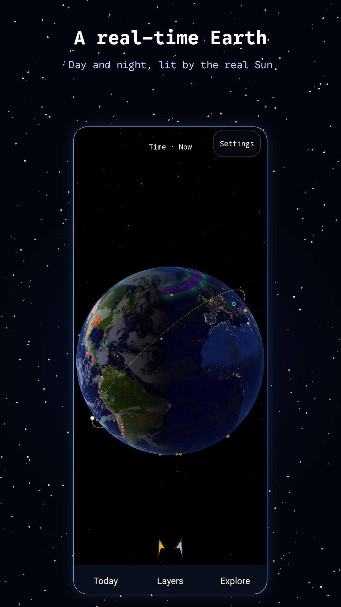
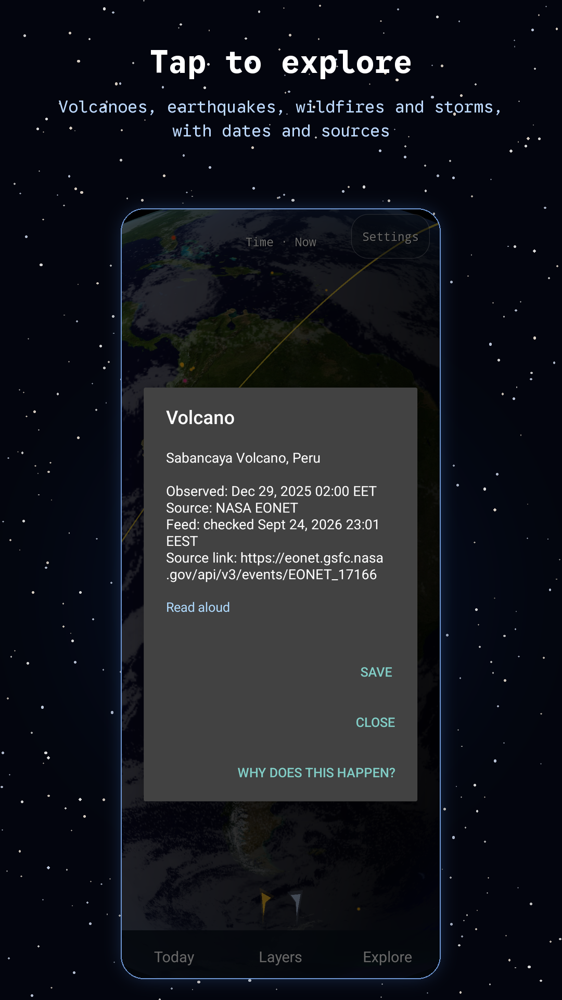
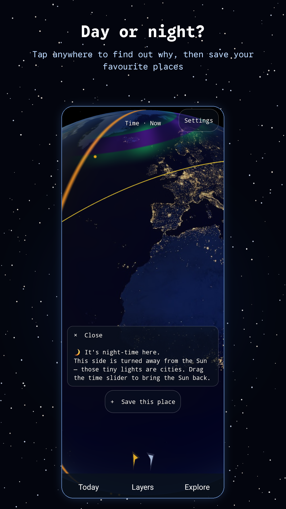
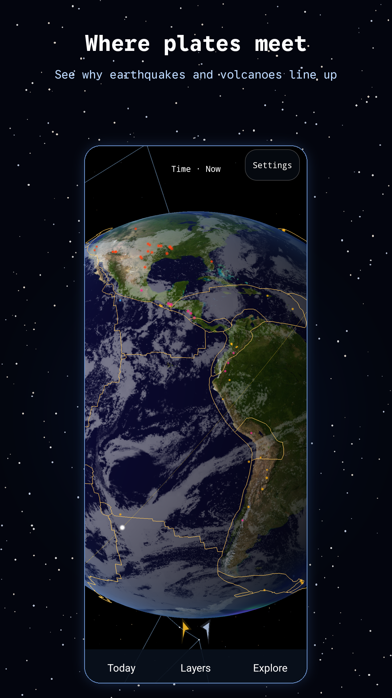
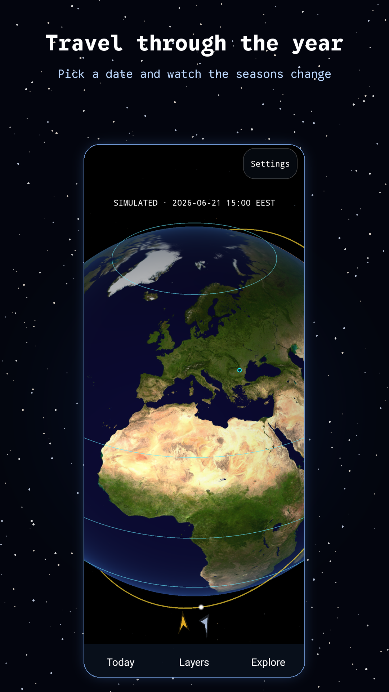
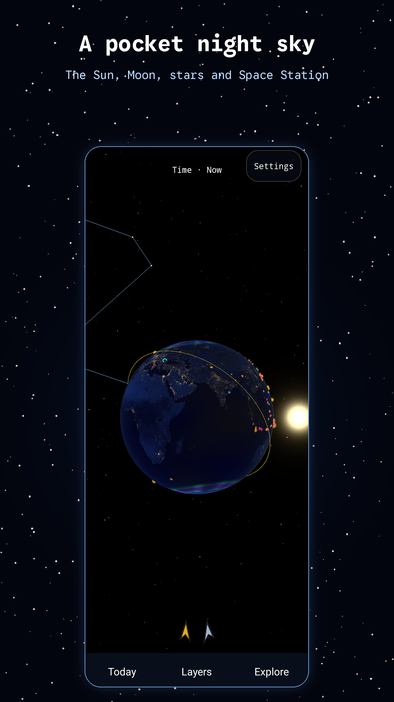
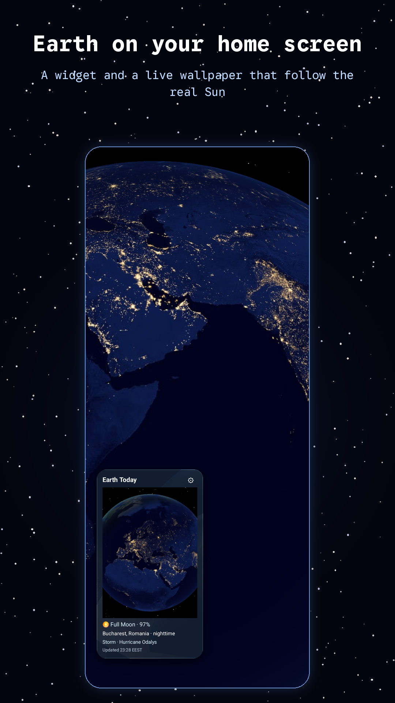
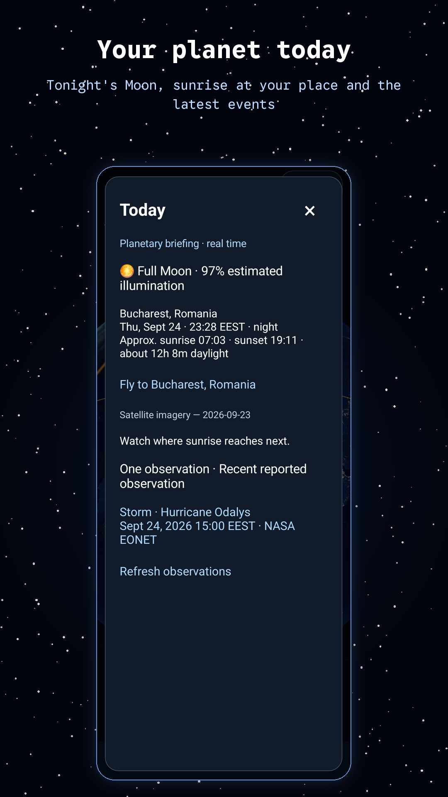

Joacă și explorare
Gravity Garden
Schimbă gravitația și crește o grădină într-un joc liniștit de puzzle bazat pe fizică.
O mică planetă în buzunar. Rotește Pământul, explorează spațiul și adună descoperiri.

Pale Blue Dot este o aplicație interactivă despre Pământ și astronomie, cu un glob 3D, pentru copii curioși de 9–12 ani și adulți. Rotește globul, urmărește granița dintre zi și noapte și atinge marcatorii evenimentelor recente pentru a afla ce se întâmplă pe mica noastră planetă.
Explorarea devine o colecție de mici descoperiri: pornește într-o călătorie ghidată, ține un carnet de teren, încearcă o provocare de căutare sau deschide Today pentru faza Lunii și ce se întâmplă pe Pământ. Iar acum Pământul poate locui și pe ecranul tău principal, ca widget și ca fundal animat.








Globul combină observații din surse publice cu simulări simplificate. USGS furnizează cutremurele de magnitudine 4,5 sau mai mare din ultimele șapte zile. NASA EONET furnizează evenimente vulcanice încă deschise, incendii de vegetație din ultimele zece zile și furtuni puternice din ultimele șapte zile.
Dezactivează norii, alege nori generați sau explorează acoperirea noroasă estimată din imaginile NASA VIIRS SNPP ale zilei precedente. Cei mai recenți nori și cele mai recente fluxuri de evenimente sunt salvate pe dispozitiv, așa că globul are ce arăta și offline, iar datele mai vechi rămân marcate atunci când o actualizare eșuează.
Granițele plăcilor provin dintr-o versiune simplificată a modelului PB2002, iar lista de orașe din GeoNames. Ambele vin incluse în aplicație, deci funcționează fără conexiune.
Soarele și Luna folosesc calcule astronomice simplificate. ISS urmează o orbită ilustrativă, fără date de poziționare în timp real. Alertele de eclipsă indică alinieri aproximative, nu predicții precise sau vizibilitatea dintr-un anumit loc. Cursorul temporal modifică simularea; nu încarcă date istorice sau prognoze despre nori ori evenimente de pe Pământ.
Fără conturi, reclame, analizarea utilizării sau SDK-uri de urmărire. Aplicația solicită doar acces la internet pentru datele publice NASA și USGS, fără permisiune de localizare sau acces la GPS. Preferințele, locurile salvate, notițele din carnet și progresul rămân pe dispozitivul tău; imaginile partajate sunt create local, iar tu alegi unde le trimiți.
Creată pentru telefoane, tablete și dispozitive pliabile Android, cu suport pentru rotirea ecranului. Necesită Android 7.0 sau mai nou și OpenGL ES 3.0. Globul este realizat în Kotlin, cu comenzi native Android și fără motor de joc.
Pale Blue Dot este disponibilă pe Google Play. Descarc-o și începe explorarea!
Descarcă de pe Google PlaySchimbă gravitația și crește o grădină într-un joc liniștit de puzzle bazat pe fizică.

Fotografiază masa, ajustează porția și ține un jurnal alimentar cu ajutorul lui Bitey.

O fotografie devine un relief 3D, împărțit în straturi pentru un portret metalic.